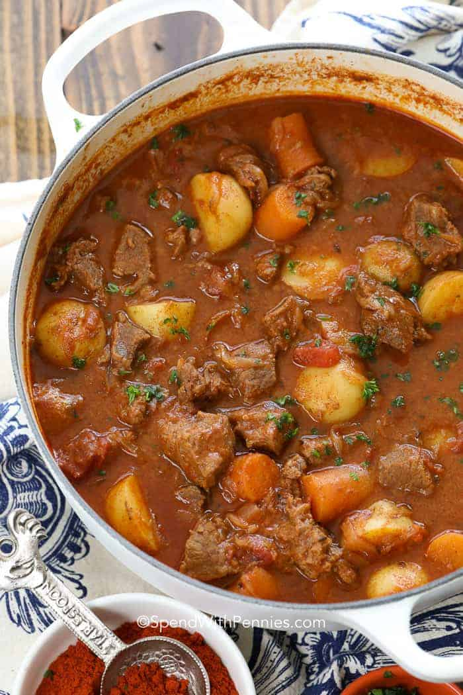

Hungarian Beef Goulash

Ingredients:
- 2 medium onions
- teaspoons butter or lard (preferred)
- 1 teaspoon caraway seeds
- 2 tablespoons paprika
- ¼ cup flour
- 1 ½ pound stewing beef trimmed and cut into 1" cubes
- 2 cups beef broth or water
- 1 cup diced tomatoes canned
- 1 teaspoon salt
- ¼ teaspoon pepper
Optional:
- 1 ½ cup carrots optional
- 3 cups potatoes optional
Directions
- In a large pot, melt butter and add onion. Cook till translucent. Stir in caraway seeds and paprika and mix well.
- In a bowl, dredge the stew beef with flour. Add beef to the onion mixture and cook for about 2-3 minutes.
- Slowly add about ¼ cup of the beef broth to lift the brown bits off the bottom of the pan. Then add remaining broth, diced tomatoes (potatoes and carrots if using), salt and pepper.
- Stir and bring to a boil, cover, then reduce to a simmer for about 1 ½ -2 hours or until tender.
back to Main Page